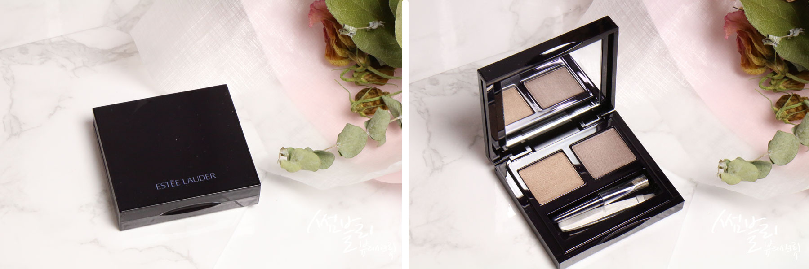
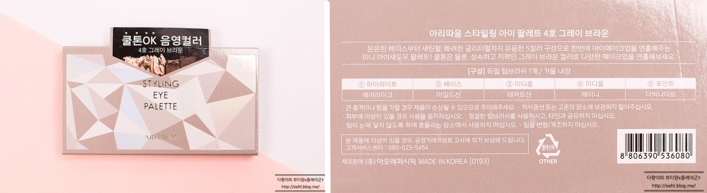
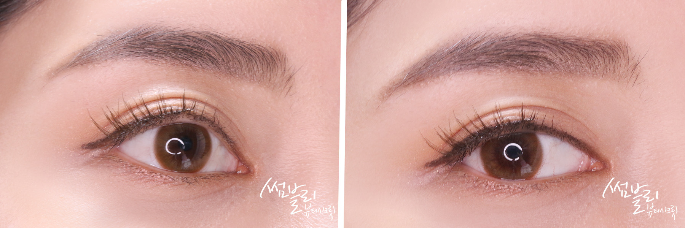

画眉毛看似很a简单，其实如果不掌握一定的技巧，眉毛画起来也不容易，关q键还是要多练习。本期博主用雅诗兰黛家的双d色眉粉给大家介绍一下眉毛的正确画法。
POINT

因为秀智在某杂志画报上的妆容而在韩国大热的砖红色唇妆，小编今天也来试试哦被认为是秀智用色的MAC chili和平价替代品TONYMOLY RD03。略带一丝棕调的橘红色上脸巨显白

爱茉莉Styling五色眼影盘，#4灰棕色，属于冷色调；其实冷色调还出了一个色号，不过并不是100%全冷色调，里面有几个颜色更加接近暖色调。
第一步

有正红色那么气场全开但也会给人很精神质感的印象。MAC这支的膏体很creamy，然而TM上嘴叠加更润。硬要说差别chili略红一丁点，而且我用它涂咬唇甚至还有点偏粉。两者只需要买其一即可！上嘴几乎0差别！做省钱girl的话推荐入TONYMOLY~